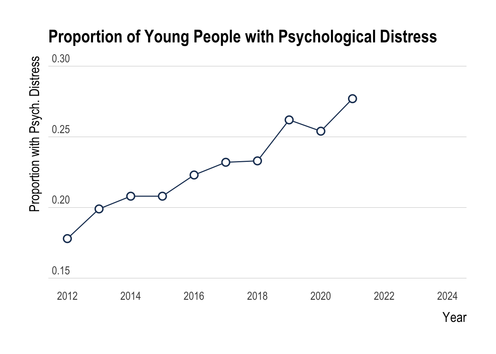

Youth Mental Health Update Digital Report
A Life Course Centre Report in Collaboration with Mission Australia
“The mental health of young Australians is rapidly declining. The evidence for this is increasingly solid and reflects a worldwide trend.”
Over the last decade, Australia has experienced what some people call an epidemic of mental ill-health among young people.
This is reflected in both objective (i.e., suicide and hospitalisation rates) and subjective (i.e., self-reported psychological distress) measures of mental ill-health.

When considering objective measures, how the mental health crisis has developed among young people is striking. For example:
• The annual suicide rate of males aged 15-19 jumped from 9.6 per 100,000 people in 2012 to 17.5 per 100,000 people in 2020 (AIHW, 2023).
• The annual self-harm hospitalisation rates among females aged 15-19 increased from 494.7 per 100,000 in 2012 to 703.4 in 2020 (AIHW, 2025a).
When considering subjective measures, increases in psychological distress over time are further apparent. For example:
• The prevalence of mental disorders among young people aged 16-24 increased from 26% in 2007 to 39% in the 2020-2022 period (AIHW, 2025b).
• Nationally-representative household surveys have found the prevalence of psychological distress among people aged 15-24 has also increased from 18.4% in 2011 to 37.6% by 2023 (Laß et. al., 2025).
• In addition to these, Mission Australia has released Mental Health Reports showing consistent increases in psychological distress among young people.
Scroll to continue…
The Gap in Specific Sub-Groups Has NOT Improved
While the proportion of young people with psychological distress has been on the decline, the gap within specific sub-groups has not decreased.
Continue below…
Regional vs Urban Australia
Historically, a smaller proportion of young people in regional Australia have had psychological distress when compared to young people in major cities. However, recently, there has been a massive spike in young people in outer regional and remote parts of Australia suffering from psychological distress.
Continue below…
Possible Explanations & Final Thoughts
It is crucial to recognise that this Youth Australia dataset, like most cross-sectional survey data, can only establish correlational relationships or associations between variables. It cannot definitively determine whether one thing causes another. Hence, from this Mission Australia data, we cannot know WHY psychological distress has decreased among young people in Australia.
In this section, we speculate at reasons why psychological distress levels rapidly decreased after 2022, which is perplexing as this period coincides with Australia coming out of the COVID pandemic.
Continue below…
One hypothesis for the decrease in psychological distress is due to the significant government investment (an additional $2.3 billion) into mental health and suicide prevention during the 2021-2022 federal budget. There were also significant investments made during the 2019-20 bushfires and during the COVID-19 pandemic.
Also, during the COVID pandemic, the Australian government increased the number of Medicare-subsidised psychology appointments from 10 to 20, which could mean increased treatment leads to increased beneftis that endure long after treatment has stopped (Cuijpers et al., 2012; Hollon et al., 2005).
To end the report, we share an excerpt from the Productivity Commission’s Mental Health and Suicide Prevention Agreement interim report (PC, 2025), which explains that most of the data they use was last collected in 2022.
As we see from the Mission Australia youth data, the trend in psychological distress has substantially changed since 2022, offering critical insight into how mental health metrics are changing over time.
It is essential to implement infrastructure for repeated data collection as collecting high-quality, consistent data is vital to support informed policy decisions.
Source: Australian Government: Department of Health, Disability and Ageing , Published 11 May 2021

2.1 What do we know about the state of the mental health and suicide prevention system?
There is no data available to describe trends in the mental health and suicide prevention system over the
term of the Agreement. Most of the data was last collected in 2022 – the year the Agreement was signed.
However, this data provides a useful baseline to understand the outcomes of the mental health and suicide
prevention system in which the Agreement operates. This will build an understanding of where things are
working, where they are not and where more information is needed.
- 2025 Mental Health and Suicide Prevention Agreement Review: Interim Report (June 2025)
There is no data available to describe trends in the mental health and suicide prevention system over the
term of the Agreement. Most of the data was last collected in 2022 – the year the Agreement was signed.
However, this data provides a useful baseline to understand the outcomes of the mental health and suicide
prevention system in which the Agreement operates. This will build an understanding of where things are
working, where they are not and where more information is needed.
- 2025 Mental Health and Suicide Prevention Agreement Review: Interim Report (June 2025)
The End
Supplementary Materials - What Counts as Psychological Distress?
Mission Australia has surveyed the psychological distress of young people (people aged X to Y)in the annual Youth Survey since 2012.
One of the main ways this is done is through the Kessler-6 (K6) test, a measure of ‘non-specific psychological distress’. As a ‘non-specific’ test, it focuses more on general psychological symptoms, which are useful at detecting depressive and anxiety symptoms. The K6 test includes six questions asking students how often in the past four weeks they have felt:
- Nervous.
- Hopeless.
- Restless or fidgety.
- So depressed that nothing could cheer them up.
- That everything was an effort.
- Worthless.
Students answer on a five-point scale ranging from ‘None of the Time’ (1 point) to ‘All of the Time’ (5 points). Total K6 scores range from 6 to 30, and based on the established Australian scoring criteria published by the Australian Bureau of Statistics (ABS, 2012), we distinguished young people with a K6 score greater than 18 as suffering from high psychological distress.
Citation
Please cite as:
Elton, T. J., Morris, R. W., Naheen, B., Freeburn, T., & Glozier, N. (2026). Youth Mental Health Update Digital Report: A Life Course Centre Report in Collaboration with Mission Australia. DOI: …
AI Disclaimer
AI was used to aid in coding and finding literature. Gemini was used to generate the images in the report without a source.
References
Australian Bureau of Statistics (ABS). (2012). Information Paper: Use of the Kessler Psychological Distress Scale in ABS Health Surveys, Australia, 2007-08. Retrieved from https://www.abs.gov.au/ausstats/abs@.nsf/lookup/34333D54F054CE51CA2579D50015D786
Australian Bureau of Statistics (ABS). (2025). Schools. Data on government and non-government students, staff and schools Retrieved from https://www.abs.gov.au/statistics/people/education/schools/latest-release
Australian Government: Department of Heath and Aged Care (DOH). (n.d.-a). Additional 10 MBS mental health support sessions during COVID-19. Retrieved from https://www.health.gov.au/sites/default/files/2023-06/additional-covid-19-mbs-mental-health-support.pdf
Australian Government: Department of Heath and Aged Care (DOH). (n.d.-b). Additional 10 MBS mental health support sessions during COVID-19. Retrieved from https://www.health.gov.au/sites/default/files/2023-06/additional-10-mbs-mental-health-sessions-during-covid-19-faqs-for-consumers.pdf
Australian Government: Department of Health, Disability and Ageing. (2021). Budget’s historic $2.3 billion investment in mental health and suicide prevention. Retrieved from https://www.health.gov.au/news/budgets-historic-23-billion-investment-in-mental-health-and-suicide-prevention
Australian Institute of Health & Welfare (AIHW). (2023). National mortality database and ABS causes of death. AIHW Website. Retrieved from https://www.aihw.gov.au/suicide-self-harm-monitoring/resources/download-data-tables
Australian Institute of Health & Welfare (AIHW). (2025a). Intentional self-harm hospitalisations. Retrieved from https://www.aihw.gov.au/suicide-self-harm-monitoring/overview/self-harm-hospitalisations
Australian Institute of Health & Welfare (AIHW). (2025b). Prevalence and impact of mental illness. Retrieved from https://www.aihw.gov.au/mental-health/overview/prevalence-and-impact-of-mental-illness
Australian Psychological Society (APS). (n.d.) How much does seeing a psychologist cost? Retrieved from https://psychology.org.au/psychology/about-psychology/what-it-costs?utm_source=chatgpt.com on 13 Dec 2025.
Cuijpers, P., Hollon, S. D., van Straten, A., Bockting, C., Berking, M., Andersson, G. (2013). Does cognitive behaviour therapy have an enduring effect that is superior to keeping patients on continuation pharmacotherapy? A meta-analysis. BMJ Open 2013;3:e002542. doi: 10.1136/bmjopen-2012-002542
Hollon, S. D., DeRubeis, R. J., Shelton, R. C., Amsterdam, J. D., Salomon, R. M., O’Reardon, J. P., Lovett, M. L., Young, P. R., Haman, K. L., Freeman, B. B., Gallop, R. (2005). Prevention of relapse following cognitive therapy vs medications in moderate to severe depression. Arch Gen Psychiatry. 2005 Apr;62(4):417-22. doi: 10.1001/archpsyc.62.4.417. PMID: 15809409.
Laß, I., Botha, F., Peyton, K., & Wilkins, R. (2025). The Household, Income and Labour Dynamics in Australia Survey: Selected Findings from Waves 1 to 23. Melbourne Institute of Applied Economic and Social Research, The University of Melbourne. https://melbourneinstitute.unimelb.edu.au/hilda/publications/hilda-statistical-reports
McGorry, P. D., Coghill, D., & Berk, M. (2023). Mental health of young Australians: dealing with a public health crisis. The Medical Journal of Australia, 219(6), 246–249. https://doi.org/10.5694/mja2.52047
Productivity Commission (PC). (2025). Mental Health and Suicide Prevention Agreement Review - Interim Report. Retrieved from https://www.pc.gov.au/inquiries-and-research/mental-health-review/interim/